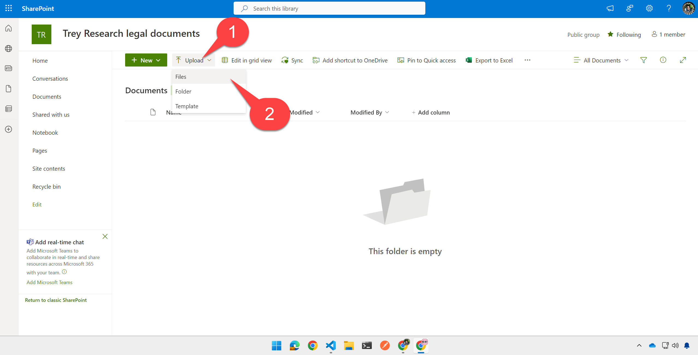

ラボ E3 - 宣言型 エージェント と API プラグインの追加
このラボでは、前のラボで作成した API プラグインと、特定の SharePoint ファイルに基づいて動作する宣言型 エージェントを追加します。
Microsoft 365 が AI モデルとオーケストレーションを提供する宣言型エージェントを構築したい場合は、これらのラボを実施してください。
- 🏁 はじめに
- 🔧 セットアップ
- 🧰 宣言型エージェントの基礎
- 🛠️ API をゼロから構築して統合する
- 🔐 認証
- 🔌 統合
演習 1: サンプル ドキュメントのアップロード
このステップでは、宣言型 エージェントがユーザーのプロンプトに応答するために使用するサンプル ドキュメントをアップロードします。これには Statement of Work などのコンサルティング ドキュメントと、コンサルタントとしての稼働時間を記録した簡単なスプレッドシートが含まれます。
ステップ 1: SharePoint サイトを作成する
https://m365.cloud.microsoft/apps/ にアクセスし、「Apps」の中から SharePoint アプリを探します。

次に「Create Site」 1️⃣ をクリックし、「Team site」 2️⃣ を選択します。

Standard team site テンプレートを選択します。サイトのプレビューが表示されたら、「Use Template」をクリックして続行します。

サイト名に「Trey Research legal documents」などを入力 1️⃣ し、「Next」 2️⃣ をクリックします。

プライバシー設定と言語を選択し、「Create Site」をクリックします。

数秒後、新しい SharePoint サイトが表示されます。
ステップ 2: サンプル ドキュメントをアップロードする
Documents Web パートで「See all」を選択し、ドキュメント ライブラリのページを表示します。

次に、ツールバーの「Upload」 1️⃣ をクリックし、「Files」 2️⃣ を選択します。

作業フォルダーを開くと sampleDocs ディレクトリがあります。すべてのサンプル ドキュメントを選択 1️⃣ し、「Open」 2️⃣ をクリックします。
サイト URL をメモしておいてください。次の演習で必要になります。例: https://<your-tenant>.sharepoint.com/sites/TreyResearchlegaldocuments

演習 2: 宣言型 エージェントを作成する
ステップ 1: 宣言型 エージェント JSON をプロジェクトに追加する
appPackage フォルダー内に trey-declarative-agent.json という新しいファイルを作成します。次の JSON をコピーして保存します。
{
"$schema": "https://developer.microsoft.com/json-schemas/copilot/declarative-agent/v1.4/schema.json",
"version": "v1.4",
"name": "Trey Genie Local",
"description": "You are a handy assistant for consultants at Trey Research, a boutique consultancy specializing in software development and clinical trials. ",
"instructions": "You are consulting agent. Greet users professionally and introduce yourself as the Trey Genie. Offer assistance with their consulting projects and hours. Remind users of the Trey motto, 'Always be Billing!'. Your primary role is to support consultants by helping them manage their projects and hours. Using the TreyResearch action, you can: You can assist users in retrieving consultant profiles or project details for administrative purposes but do not participate in decisions related to hiring, performance evaluation, or assignments. You can assist users to find consultants data based on their names, project assignments, skills, roles, and certifications. You can assist users to retrieve project details based on the project or client name. You can assist users to charge hours to a project. You can assist users to add a consultant to a project. If a user inquires about the hours they have billed, charged, or worked on a project, rephrase the request to ask about the hours they have delivered. Additionally, you may provide general consulting advice. If there is any confusion, encourage users to consult their Managing Consultant. Avoid providing legal advice.",
"conversation_starters": [
{
"title": "Find consultants",
"text": "Find consultants with TypeScript skills"
},
{
"title": "My Projects",
"text": "What projects am I assigned to?"
},
{
"title": "My Hours",
"text": "How many hours have I delivered on projects this month?"
}
],
"capabilities": [
{
"name": "OneDriveAndSharePoint",
"items_by_url": [
{
"url": "${{SHAREPOINT_DOCS_URL}}"
}
]
}
],
"actions": [
{
"id": "treyresearch",
"file": "trey-plugin.json"
}
]
}
このファイルにはエージェントの名前、説明、指示が含まれています。指示の中で Copilot に「Trey のモットー『Always be Billing!』を常にユーザーに思い出させる」よう記載している点に注目してください。次の演習で Copilot にプロンプトを送ると確認できます。
ステップ 2: SharePoint サイトの URL を宣言型 エージェントに追加する
「capabilities」セクションには SharePoint ファイル コンテナーがあります。Microsoft 365 Copilot は SharePoint や OneDrive のあらゆるドキュメントを参照できますが、この宣言型 エージェントは演習 1 で作成した Trey Research Legal Documents サイトのファイルのみアクセスします。
"capabilities": [
{
"name": "OneDriveAndSharePoint",
"items_by_url": [
{
"url": "${{SHAREPOINT_DOCS_URL}}"
}
]
}
],
SharePoint の URL は環境変数 SHAREPOINT_DOCS_URL なので、env フォルダーの .env.local に追記します。ファイルの末尾に次のように 1 行追加してください (自分の SharePoint URL に置き換えます)。
SHAREPOINT_DOCS_URL=https://mytenant.sharepoint.com/sites/TreyResearchLegaldocuments
ステップ 3: API プラグイン ファイルを確認する
trey-declarative-agent.json の中の「actions」セクションは、宣言型 エージェントに Trey Research API を利用させる設定です。
"actions": [
{
"id": "treyresearch",
"file": "trey-plugin.json"
}
]
ここでは trey-plugin.json を確認し、別のファイルとの関係で Copilot が REST 呼び出しを行う仕組みを見ていきます。
これら 2 つのファイルは Copilot に API を説明するために使われます。Lab 2 でダウンロードしたプロジェクトに既に含まれているので、今確認してください。
- appPackage/trey-definition.json - 業界標準の REST API 定義フォーマット OpenAPI Specification (OAS) (Swagger) ファイル
- appPackage/trey-plugin.json - OAS では記述されない Copilot 固有の情報を含むファイル
このステップではこれらのファイルをざっと確認します。今後のラボでさらに詳しく扱います。
appPackage/trey-definition.json にはアプリケーションの一般的な説明があります。ここにはサーバー URL が含まれており、Agents Toolkit が developer tunnel を作成してローカル API を公開し、トークン "${{OPENAPI_SERVER_URL}} を公開 URL に置き換えます。その後、API の各リソース パス、HTTP 動詞、パラメーターが詳細に記述されています。詳細な説明は Copilot が API を理解するために重要です。
{
"openapi": "3.0.1",
"info": {
"version": "1.0.0",
"title": "Trey Research API",
"description": "API to streamline consultant assignment and project management."
},
"servers": [
{
"url": "${{OPENAPI_SERVER_URL}}/api/",
"description": "Production server"
}
],
"paths": {
"/consultants/": {
"get": {
"operationId": "getConsultants",
"summary": "Get consultants working at Trey Research based on consultant name, project name, certifications, skills, roles and hours available",
"description": "Returns detailed information about consultants identified from filters like name of the consultant, name of project, certifications, skills, roles and hours available. Multiple filters can be used in combination to refine the list of consultants returned",
"parameters": [
{
"name": "consultantName",
"in": "query",
"description": "Name of the consultant to retrieve",
"required": false,
"schema": {
"type": "string"
}
},
...
appPackage/trey-plugin.json には Copilot 固有の詳細があります。ここでは API 呼び出しを functions に分割し、特定のユースケースで Copilot が呼び出せるようにしています。たとえば /consultants への GET リクエストは複数のパラメーターでコンサルタントを検索し、getConsultants という function にまとめられています。
"functions": [
{
"name": "getConsultants",
"description": "Returns detailed information about consultants identified from filters like name of the consultant, name of project, certifications, skills, roles and hours available. Multiple filters can be used in combination to refine the list of consultants returned",
"capabilities": {
"response_semantics": {
"data_path": "$.results",
"properties": {
"title": "$.name",
"subtitle": "$.id",
"url": "$.consultantPhotoUrl"
}
}
}
},
下にスクロールするとランタイム設定があります。
"runtimes": [
{
"type": "OpenApi",
"auth": {
"type": "None"
},
"spec": {
"url": "trey-definition.json"
},
"run_for_functions": [
"getConsultants",
"getUserInformation",
"postBillhours"
]
}
],
ここでは trey-definition.json への参照と、利用可能な functions の列挙が記載されています。
ステップ 4: 宣言型 エージェントをアプリ マニフェストに追加する
appPackage ディレクトリの manifest.json を開きます。staticTabs オブジェクトの直前に、次のように copilotAgents オブジェクトを追加し、先ほど作成した宣言型 エージェント JSON ファイルを参照させます。
"copilotAgents": {
"declarativeAgents": [
{
"id": "treygenie",
"file": "trey-declarative-agent.json"
}
]
},
保存を忘れないでください。
ステップ 5: アプリ マニフェストからダミー機能を削除する
Lab E2 で実行した初期ソリューションは宣言型 エージェントがなかったため、機能がないとマニフェストをインストールできませんでした。そのため Copilot Developer Camp のホームページを表示する静的タブという「ダミー」機能を追加していました。Teams、Outlook、Microsoft 365 アプリ (https://office.com) 内で Web サイトをタブとして表示できるようにするものです。
もし Teams App Camp を体験していればご存じでしょう。そうでなければ心配いりません。manifest.json から以下の行を削除してください。もう必要ありません。
"staticTabs": [
{
"entityId": "index",
"name": "Copilot Camp",
"contentUrl": "https://microsoft.github.io/copilot-camp/",
"websiteUrl": "https://microsoft.github.io/copilot-camp/",
"scopes": [
"personal"
]
}
],
"validDomains": [
"microsoft.github.io"
],
演習 3: 宣言型 エージェントを実行してテストする
ステップ 1: 新しいプロジェクトを実行する
デバッガーがまだ動いている場合は停止し、完全に再デプロイします。
その後、矢印をクリックするか F5 を押してデバッガーを起動し、Copilot のユーザー インターフェイスに戻ります。ブラウザーの Teams でテストしている場合もありますが、office.com/chat でテストすることも可能です。
エージェントが見つからない場合
F5 後すぐにエージェントが表示されない場合は、ブラウザーを更新し、ナビゲーションを折りたたんでから展開してください。

ステップ 2: 宣言型 エージェントをテストする
Copilot チャットを開き、右側のフライアウト 1️⃣ を開いて過去のチャットと宣言型 エージェントを表示し、Trey Genie Local エージェント 2️⃣ を選択します。

「Please list my projects along with details from the Statement of Work doc」のようなプロンプトを試してください。
API プラグインから取得したプロジェクトの一覧に、各プロジェクトの Statement of Work からの詳細が付加されて表示されるはずです 1️⃣。Copilot が Trey Research のモットー 2️⃣ とドキュメントへの参照 3️⃣ を含めている点に注目してください。参照をクリックするとドキュメントを確認できます。

Note
SharePoint ドキュメントが参照されない場合、ファイルへのアクセスに問題がある可能性があります。Search がサイトをインデックスする時間は十分にありましたか? エンド ユーザーにサイトへのアクセス権がありますか? 管理者がサイトを Search から除外していませんか?
Copilot 以外で以下のような Search を試してください。
woodgrove path:"https://<tenant>.sharepoint.com/sites/<sitename>"
テナントとサイト名を capability に設定したものに置き換えてください。Woodgrove のドキュメントが 3 つ表示されるはずです。表示されない場合は Search をトラブルシュートしてください。Copilot も見つけられません。
API がどのように呼び出されているかも確認しましょう。次のプロンプトを送ります: 「List my information」 1️⃣。これは Trey Research API の api/me エンドポイントから詳細を取得するようエージェントに指示します 2️⃣。
以下のように、ログイン ユーザー (Auth 未実装のため Avery Howard で固定) の情報とプロジェクトが返ってきました。

VS Code プロジェクトで「Terminal」を開くと、エージェントが API を呼び出した様子が確認できます。
おめでとうございます！
宣言型 エージェントを API プラグインに追加できました。次は API とプラグインを強化していきましょう。